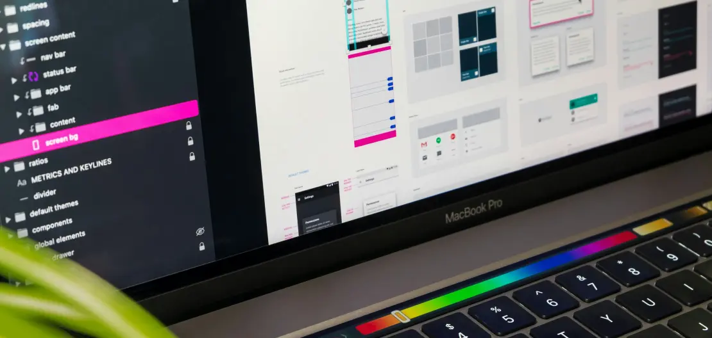
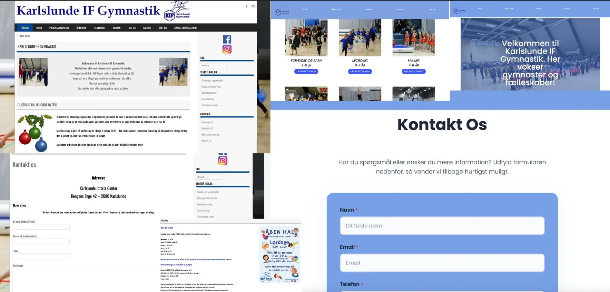

Website Redesign
Komplet virksomhedssite
Om Projektet
I dette projekt arbejdede vi med at redesigne en virksomheds hjemmeside for at gøre den bedre at bruge og flottere at se på. Vi startede med at kigge på den gamle side og fandt ud af, hvad der kunne blive bedre. Derefter lavede vi et nyt design, hvor vi brugte alt det, vi har lært i de forskellige temaer. Målet var at lave en hjemmeside, der er nemmere at navigere rundt på og ser bedre ud, så den passer bedre til, hvad virksomheden står for.
Læringsmål:
- Analyse af eksisterende webdesign og identificering af forbedringer
- Komplet redesign proces fra research til implementering
- Responsivt design
- Præsentation og dokumentation af projektet
Virksomhedssite - Karlslundegym.
I denne opgave arbejdede vi i grupper af fire. Vores mål var at identificere en virksomhed, der allerede har et website eller mangler et website, og derefter forsøge at redesigne eller designe dette website for at se, om der kunne foretages forbedringer i forhold til det originale website eller kunne skabe et nyt hvis ikke de havde et website.
Vi har valgt Karlslundegym som havde et website men man kan se at de ikke havde opdateret deres website eller de ikke havde så meget fokus på, deres design. Til venstre kan i se den orginale hjemmeside og til højre kan i se vores redesign.
Processen
Karlslundegym
Da vi alle var enige om, hvilken virksomhed vi skulle redesigne, oprettede vi et Trello-board, hvor vi indtastede de forskellige opgaver. Opgaverne blev fordelt, så hver person fik ansvaret for den opgave, de blev tildelt. Vi lavede statusopdateringer hver gang, vi mødtes, både i skolen og uden for skolen. Derudover brugte vi GitHub til at arbejde på vores hjemmeside. Vi offentliggjorde opdateringer hver gang, vi mødtes, for at undgå eventuelle problemer. Vi havde udfordringer med at publicere vores brand. Heldigvis fik vi det løst, men det er vigtigt at huske, at man altid skal oprette en ny branch hver gang, man har publiceret sit brand.